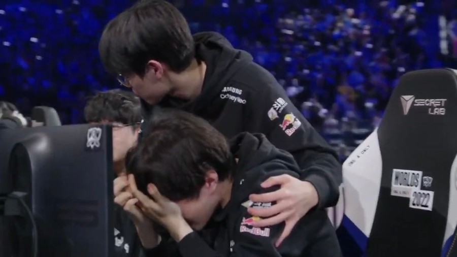

THE GRIND, THE GLORY
고난 끝에 찾아온 영광
T1 소속 대한민국의 리그 오브 레전드 프로게임단. 팀 약자는 T1. 2012년 후반기 SK telecom T1이라는 이름으로 창단되었다.
2013 LCK 서머 우승 이후 리그 오브 레전드 시즌3 월드 챔피언십 우승까지 달성하면서 LCK 팀들 중 최초로 월드 챔피언십과
메이저 국제 대회를 우승한 팀으로써 한 해를 제패함과 동시에 이후 5년간 지속되었던 리그의 기나긴 황금기를 동시에 열어젖히는 신호탄을 쏘아올린
3LCK의 황금기를 상징하는 최고의 팀으로 되었고, 2015년 통합 팀 체제 구축 이후부터 2017년 초중반까지 단순 국내만이 아닌 전 세계적인 수준으로 공인받을만한 왕조로써 그 명맥을 구가했다.
우승 트로피 세레머니
그들이 겪어왔던 고난들
2022년, T1은 전세계를 통틀어서 10번째 우승이라는 대기록을 세운다. 하지만
전승우승, 팀에 대한 팬들의 기대, 방심등으로 인하여 2022년 월드 챔피언쉽에서 준우승을 차지하게 된다...

이러한 일들은 2023년에도 영향을 끼치는데
연속된 준우승으로 인해 선수들의 정신에도 영향이 갔으며
이것은 개인 역량의 부진을 일으키기도 했다. 그러나 더 큰 일이 생기게 되는데...
주장 페이커의 손목부상
주장의 빈자리가 큰 것인지 팀은 1승6패라는 처참한 기록을 세운다. 그러나
어찌저찌 페이커가 복귀를 한 후 월드 챔피언쉽 시드권을 따내게 된다.
그러나 월드챔피언쉽이 시작한 후 상대적으로 실력이 낮은 북미팀과의 게임에서 불안한 모습을 보이며
팬들의 두려움은 더욱 커져가게 되었다.
개최국의 나라는 우승을 못한다는 징크스
T1을 제외한 다른 한국팀은 중국팀에게 패배하면서
LPL Vs T1 구도가 형성되었다.
그런 T1은 각성을 하며 스위스 스테이지 4라운드, 8강, 4강, 결승에서 각각 BLG, LNG, 징동, 웨이보를 연속으로 꺾고 우승하며
2018 롤드컵의 아픔을 지우고 1부 리그의 지위를 지키는데 성공하였다.